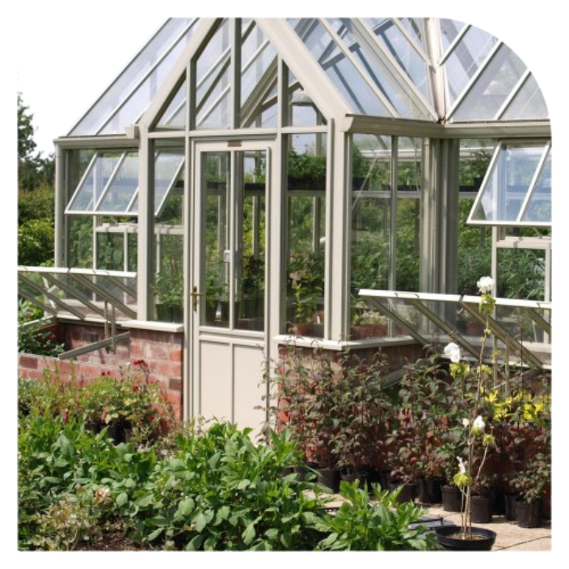
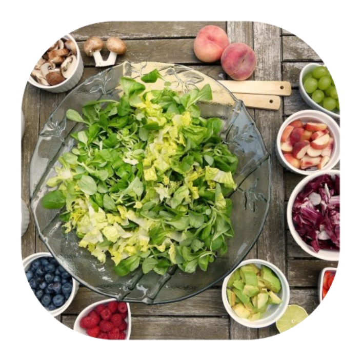

Our restaurant implements sustainable food sourcing, as well as reducing our overall food waste, and using energy efficient equipment. In regards to our reduced food waste, we offer smaller portion size options to our patrons, allowing for less wasted food. We also track our inventory, ensuring we use food before it spoils. Our restaurant uses energy efficient equipment, such as LED lighting and motion sensing lights to conserve energy. Additionally, our restaurant sources our ingredients locally and seasonally, supporting local businesses and reducing transportation emissions. Global Greens is a vegetarian restaurant, reducing our carbon footprint in regards to animal agriculture.

Our restaurant implements sustainable food sourcing, as well as reducing our overall food waste, and using energy efficient equipment. In regards to our reduced food waste, we offer smaller portion size options to our patrons, allowing for less wasted food. We also track our inventory, ensuring we use food before it spoils. Our restaurant uses energy efficient equipment, such as LED lighting and motion sensing lights to conserve energy. Additionally, our restaurant sources our ingredients locally and seasonally, supporting local businesses and reducing transportation emissions. Global Greens is a vegetarian restaurant, reducing our carbon footprint in regards to animal agriculture.
Fundamentally, through our eco-friendly systems and diverse recipes, Global Greens is dedicated to bridging the gap between delicious cuisines and environmentally conscious food decisions.
